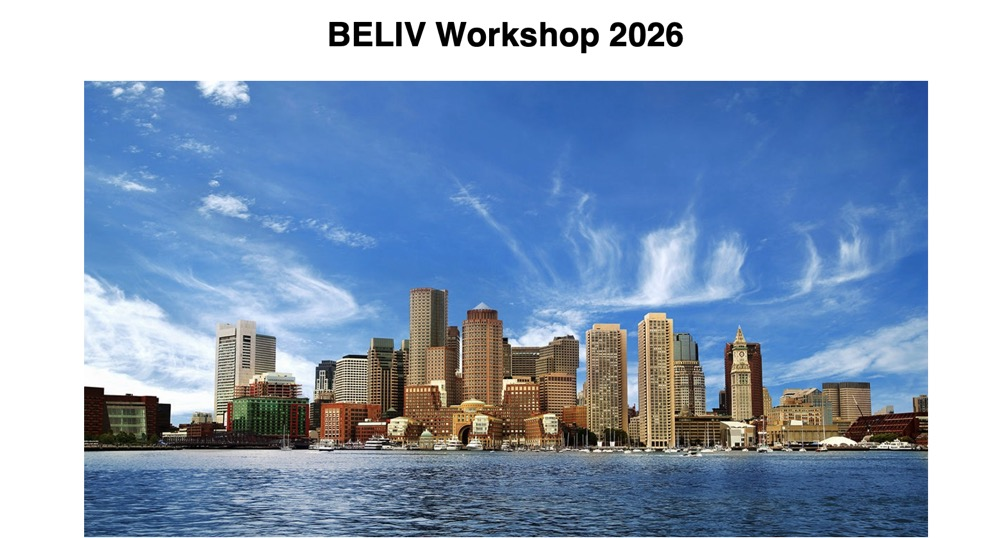

Suresh Venkatasubramanian
Speaker Bio:
Dr. Suresh Venkatasubramanian directs the Center for Technological Responsibility, Reimagination, and Redesign (CNTR) with the Data Science Institute at Brown University, and is the Dean's Professor of Computer Science and Data Science. Suresh's background is as a computer scientist and his current research interests lie in algorithmic fairness, and more generally the impact of automated decision-making systems in society. Suresh recently finished a stint in the Biden-Harris administration, where he served as Assistant Director for Science and Justice in the White House Office of Science and Technology Policy. In that capacity, he helped co-author the Blueprint for anAI BIll of Rights.